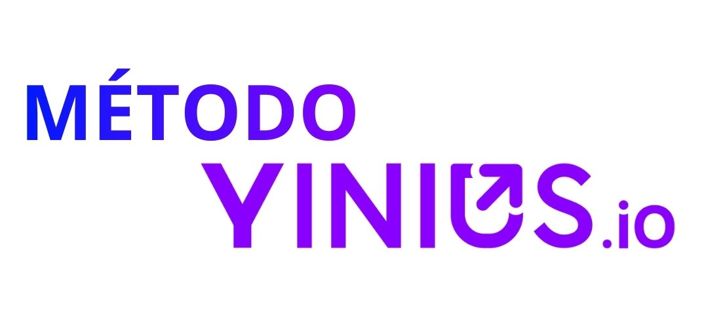
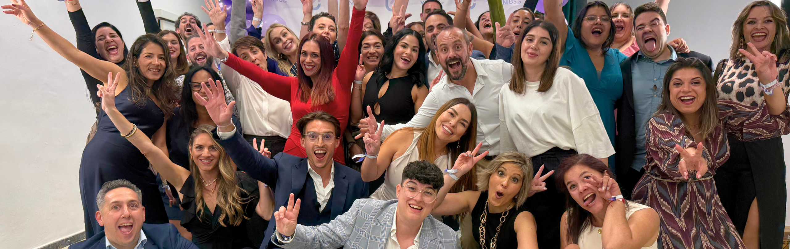

Clase para vendedores con experiencia que quieren dar el salto al mundo digital
- Teletrabajo
- Proyección de carrera
- Estabilidad económica
Mira gratis la clase introductoria y aprende más de 5 claves reales sobre cómo acceder a un puesto en ventas digitales.

Si llevas tiempo pensando en un cambio laboral, esto puede ayudarte
-
La verdadera oportunidad del rol SDR: entrar por la puerta correcta del crecimiento digital.
-
Cómo acceder a un puesto digital aunque no vengas del sector digital.
-
Por qué el SDR tiene más proyección que muchos roles tradicionales de ventas.
-
Qué perfiles están contratando hoy las empresas digitales para ventas.
-
Por qué vender en digital requiere un método, no solo experiencia.
Garantía de empleabilidad por contrato para alumnos certificados que cumplan el proceso
Si completas la certificación y, tras el plazo establecido, no consigues trabajo como SDR en una empresa digital, te devolvemos el dinero. La garantía está recogida por contrato y vinculada al cumplimiento del proceso.
Soporte durante la certificación
Durante la formación tendrás soporte por escrito para resolver dudas sobre el proceso y los contenidos. El equipo responde en un plazo máximo de 24 horas, de lunes a viernes, en horario laboral.
Comunidad de alumnos y alumni
Durante la formación formarás parte de la comunidad de alumnos de Yinius.io y, al finalizar, de su red de alumni. Un entorno donde compartir proceso, aprendizaje y experiencias con personas que buscan el mismo salto profesional.
Sin duda, uno de los métodos con más resultados reales para acceder a un puesto en ventas digitales, tras completar la certificación y seguir el proceso

Casos de Éxito
Empresas digitales, alumnos certificados y datos objetivos lo respaldan:
/4.png)
Alumno
SDR Tech
/5.png)
Alumno
Ventas
/6.png)
Alumno
Startup
/7.png)
Alumno
Agencia
/8.png)
Alumno
B2B Tech
/9.png)
Alumno
SaaS
/10.png)
Alumno
SDR Lead
/11.png)
Alumno
Tech Corp
/12.png)
Alumno
Ventas B2B
/13.png)
Alumno
Digital PR
/14.png)
Alumno
SDR Tech
/15.png)
Alumno
Agencia It
/16.png)
Alumno
Manager
Desafiamos a cualquier otro método a mostrar más resultados reales en ventas digitales en España
El Método que ha conseguido que tengamos un 94% de efectividad para conseguir trabajo con cientos de alumnos certificados.
/17.png)
/18.png)
/19.png)
Dudo que puedas leer estas historias
y no querer lo mismo para ti
Ahora imagina qué habrían perdido si no hubieran dado el paso.
No decidir también tiene un precio
Un proceso claro, paso a paso,
con un objetivo
concreto
Formación
meses
Búsqueda de trabajo
Aprendes la aplicación Yinius. Método para:
Conexiones con empresas
- Conexión con empresas para contratación
- Autogeneración de entrevistas
Prácticas (voluntarias)
- Conexión con empresas para prácticas
- Realización de prácticas
Soporte por escrito
Asesoramiento en tus primeros meses como SDR.
Las 3 vías para conseguir tu puesto como SDR
Vía 01 — Generación de entrevistas por tu cuenta
Qué es:
Aprendes a generar tus propias entrevistas aplicando el Método Yinius.
No dependes de nadie para encontrar trabajo.
Desarrollas una habilidad que te acompañará toda tu carrera profesional.
Traducción emocional:
"No espero oportunidades. Sé crearlas."
Vía 02 — Conexión con empresas para tu contratación
Qué es:
Si tras aplicar la vía 1 no lo consigues, te conectamos con empresas digitales que buscan contratar SDRs.
No estás solo en el proceso.
Accedes a empresas reales que ya entienden el rol y el método.
Traducción emocional:
"No empiezo desde cero. Entro con contexto."
Vía 03 — Prácticas voluntarias en empresa digital
Qué es:
Si no lo consigues ni por la vía 1 ni por la vía 2, puedes realizar prácticas en una empresa digital que busca contratar.
No son obligatorias. Son una opción más.
Aquí demuestras en un entorno real por qué mereces quedarte.
Traducción emocional:
"Puedo demostrar lo que valgo, haciendo."
A quienes siguen el camino, les empiezan a pasar cosas.
Si estás empezando
desde cero
Si vienes de ventas, atención al público o de un entorno que no es digital, no estás en desventaja. Simplemente nadie te ha enseñado cómo funciona realmente este mercado.
La mayoría de personas que hoy trabajan como SDR en empresas digitales empezaron exactamente en este punto: sin experiencia digital previa, pero con actitud y método.
Aquí no empiezas como “novato”. Empiezas como alguien que decide aprender bien desde la base.
El único requisito real no es saber más, sino estar dispuesto a seguir un proceso y
aplicarlo con constancia.
No llegas tarde. Llegas justo en
el momento correcto.
Si ya has hecho otras
formaciones digitales
El problema no suele ser la falta de esfuerzo, sino la falta de estructura. Aquí el crecimiento viene de entender qué hacer, cuándo hacerlo y con qué prioridad.
El Método Yinius no te promete empezar de cero. Te permite ordenar lo que ya sabes, eliminar ruido y convertir acción dispersa en resultados consistentes.
No se trata de trabajar más ni de probar “otra técnica”. Se trata de profesionalizar tu forma de generar oportunidades.
El objetivo es el mismo: acceder a un puesto estable en una empresa digital con proyección real.
Clases en directo con especialistas
La formación no es solo contenido.
Es poder resolver dudas cuando lo necesitas
Durante la formación tendrás clases en vivo y soporte por escrito para resolver dudas sobre el contenido y el proceso.
Si completas la certificación, sigues el proceso y no consigues trabajo como SDR en una empresa digital dentro del plazo establecido, te devolvemos el dinero.
La garantía está recogida por contrato.
/22.png)
¿Dónde te ves si todo sigue exactamente igual dentro de un año?
/21.png)
¿Quién es Álvaro Castro?
Yinius.io nace de la experiencia directa de Álvaro Castro en ventas, tras empezar como comercial y formarse de manera intensiva en técnicas de venta y comportamiento humano. Con el tiempo, pasó de formar vendedores de forma individual a escalar un sistema replicable, aplicado a decenas de profesionales cada mes. No es inspiración personal: es experiencia convertida en método.
A partir de esa trayectoria, Álvaro desarrolla un enfoque propio basado en vender con ética y estructura, profesionalizando el rol del SDR. Yinius.io surge como un sistema diseñado para trasladar lo que funciona en el mercado real a una formación clara, aplicable y orientada a resultados sostenibles. Aquí no se enseña teoría: se enseña ejecución probada.
Hoy, Yinius.io es un proyecto con presencia en medios nacionales y reconocimiento externo, aplicado para formar y acompañar a profesionales que buscan acceder a empresas digitales con criterio y proyección. A este punto, la pregunta ya no es si funciona, sino si quieres ser tú quien lo aplique.
FAQ — Preguntas frecuentes
Sobre la certificación
/2.png)